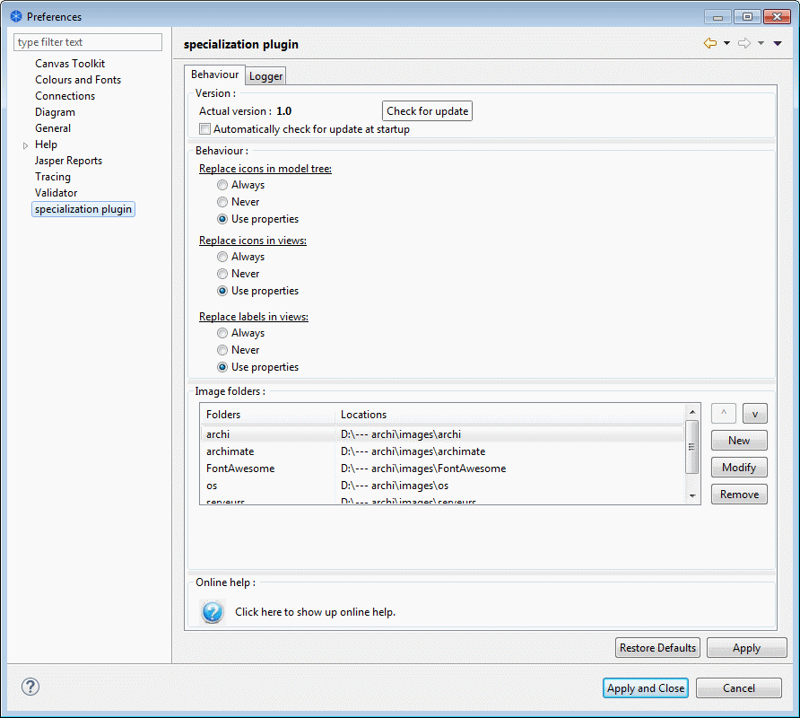

Specialization plugin
Preference page - Behaviour

In this section, you will find the plugin's version and a button to check if a newer version is available on Github. You may select the "Automatically check for update at startup" to automate this check each time Archi is started.
If you are behind a proxy, you may add the following lines into your archi.ini file:
-Dhttp.proxyHost=<name or @IP>
-Dhttp.proxyPort=<port>
-Dhttp.proxyUser=<username>
-Dhttp.proxyPassword=<password>
-Dhttps.proxyHost=<name or @IP>
-Dhttps.proxyPort=<port>
-Dhttps.proxyUser=<username>
-Dhttps.proxyPassword=<password>
-Djdk.http.auth.tunneling.disabledSchemes=
-Djdk.http.auth.proxying.disabledSchemes=
The specialization plugin uses properties to know what it can or can't do:
- at the model level:
- must replace icons in tree → [yes|no]
- must replace icons in views → [yes|no]
- must replace labels in views → [yes|no]
- at the view level:
- must replace icons → [yes|no]
- must replace labels → [yes|no]
- at the folder level:
- must replace icons → [yes|no]
This section allows to specify how those properties will be used:
Replace icons in model tree:
- Always → do not use the "must replace icons in tree" property but always replace icons in the model tree
- Always → do not use the "must replace icons in tree" property but never replace icons in the model tree
- Always → use the "must replace icons in tree" property
Replace icons in views:
- Always → do not use the "must replace icons in views" property but always replace icons in the views
- Always → do not use the "must replace icons in views" property but never replace icons in the views
- Always → use the "must replace icons in views" property
Replace labels in views:
- Always → do not use the "must replace labels in views" property but always replace labels in the views
- Always → do not use the "must replace labels in views" property but never replace icons in the views
- Always → use the "must replace labels in views" property
This table allows to specify witch folders will be used by the specialization plugin to search for image files.
Click on the interrogation mark to show up the online help.